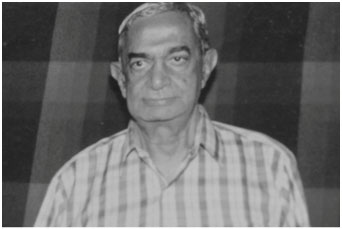
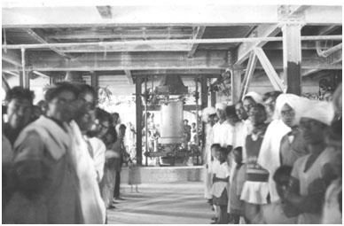

About us
To run without break for eighty-two years all the while maintaining its reputation with customers as well as shareholders is no mean achievement. In the case of Mysore Stoneware Pipes and Potteries it was possible because the MSPP was served by outstanding workers and management. But there was more: an uncompromising commitment to excellence in its products and services— quality was the watchword from the day the first pipes rolled out of the plant. To its founder Vyasa Rao quality was everything. The result is MSPP became the standard that all suppliers of sanitary products had to meet, and it was so stated in government tenders.
Though best known for sanitary pipes and fittings, during the course of its illustrious 82-year history, MSPP has produced a wide range of products like chemical containers (jars), laboratory bricks and many others. The figure above is indicative of its range.
It all began with a vision…
Mysore Stoneware Pipes and Potteries Company was the brainchild of R. Vyasa Rao, a remarkable man in a remarkable era. Vyasa Rao came from a land owning family living in Nanjundapura near the village of Ramohalli in Bangalore Taluk. Ramohalli today is known for its great banyan tree and has been developed into a tourist attraction. At the time when Vyasa Rao was born, it was a struggling agricultural belt. His father was Nanjundappa and mother Savitramma. Though owning substantial land, for reasons that are unclear, but probably because of the severe drought that affected the region at the time, Nanjundappa was forced to seek government employment. He was working in Gudibande in Kolar District as a government clerk when Vyasa Rao was born in 1881, the fourth of five children.
Vyasa Rao had his early schooling in the Wesleyan Mission School in Bangalore. He lost his father in 1900 but somehow managed to finish B.A. in geology in 1904 from Central College, then affiliated to Madras University. The teacher who influenced him most was Sambashiva Iyer, professor of geology. (One of Vyasa Rao's classmates was Mirza Ismail, later to be Diwan of Mysore.) Thanks to Sambasha Iyer's initiative, he was appointed apprentice geologist in the state's fledgling Geology Department. Vyasa Rao was essentially a field geologist who was never happy sitting in a government office. He soon left the Government and joined the Peninsular Mineral Corporation as exploration geologist. While at Peninsular he found chromate ore in Sindhuvalli. This was the first in a long series of major discoveries spanning four decades.
His success at Peninsular brought him to the attention of Jamsetji Tata, the founder of Tata Iron & Steel Co. Vyasa Rao compiled an extraordinary record at Tatas making important discoveries of iron ore, lime and coal that helped put the fledgling company on a firm footing. By 1908, still short of thirty, he was made the chief geologist of Tatas. He was the first Indian to hold the position. His portrait still hangs in the Early Pioneers gallery in the Jamshedpur office of Tata Iron and Steel Works.
Mentors
In 1912, the Maharaja Krishna Raja Wodeyar appointed M. Vishweshwariah, also a visionary like Vyasa Rao, Diwan of Mysore and set the state on a course of industrialization. He was on the lookout for talented Mysoreans who could help build an industrial base for the state and in 1916 invited Vyasa Rao to join Mysore Government. As Geologist on Special Duty, he helped locate iron ore and other minerals that were needed for the Bhadravati Iron and Steel Works. Next, on Maharaja's personal direction he helped found the Government Porcelain Factory in Bangalore. Not happy with the political developments in the state, Vyasa Rao returned to Bengal.
He returned to Bangalore for good around 1925, though still serving as a consulting geologist to several companies like Poddar, Walchand Bahadur Singh in Bengal and other states. During his work for the Porcelain Factory, Vyasa Rao had located clay mines that he felt could be used for manufacturing sanitary ware and chemical containers. Sometime before 1930, possibly as early as 1927, he began planning for a stoneware factory to manufacture such products. His idea was to evolve into Mysore Stoneware Pipes & Potteries Company that he founded a few years later. It took a good deal of thought and planning and no flash in the pan.
Vyasa Rao's talent and enterprise were recognized early. In addition to Jamsetji Tata, Maharaja Krishna Raja Wodeyar IV as well two eminent Diwans Sir M Vishweshwaraya and Sir Mirza Ismail sought him out and actively encouraged him to start industries in the state. Mirza and Vyasa Rao were classmates at the Central College in Bangalore. While Mysore Stoneware Pipes and Potteries is the best known of the companies he started, it was by no means the only one. Others included what became the government porcelain factory and also Mysore Electrochemicals later acquired by the Bharat Heavy Electricals (BHEL).
Directors
Chairman
Executive Director
Executive Director
Director
Director
Director
Director
Friends, Colleagues and Pioneers
It was at this time that administrator and statesman Navaratna Rama Rao who was to play a major, even crucial role enters the picture. It was an unprecedented undertaking that required major resources in terms of land, mining rights and transportation, though Vyasa Rao believed he could to raise finances from private sources and common stock. In what was to prove a fortuitous coincidence, Navaratna Rama Rao, already famous for founding the silk industry in the state became Development Secretary of Mysore Government in 1927. He helped Vyasa Rao to move his plans and procedures through the proper government channels.
Navaratna Rama Rao
 The government of Maharaja Krishna Raja Wodeyar IV was fortunate in having several administrators of outstanding ability, and among these Navaratna Rama Rao (1877 – 1960) was arguably the most brilliant. His enduring contribution was setting up the silk industry in the state which continues to be the country's largest silk producer. It became the model for the Central Silk Board of which became the first Vice Chairman.
The government of Maharaja Krishna Raja Wodeyar IV was fortunate in having several administrators of outstanding ability, and among these Navaratna Rama Rao (1877 – 1960) was arguably the most brilliant. His enduring contribution was setting up the silk industry in the state which continues to be the country's largest silk producer. It became the model for the Central Silk Board of which became the first Vice Chairman.
He was also a delegate to the First Round Table Conference in 1930. Rama Rao was honored with the title of Rajasevaprasakta by the Maharaja for his services.
At this point, it is worth taking a brief look at Navaratna Rama Rao (1877 – 1960), who was to be closely associated with Vyasa Rao for nearly three decades. In the first three decades of the last century, Maharaja's Mysore was fortunate in having a galaxy of outstanding administrators, and among them Rama Rao was widely regarded as the most brilliant. The industry he created, sericulture, was until recently the largest private employer and revenue producer in the state. Even today, Karnataka grows the Lion's Share of India's silk. Rama Rao served as Director of Sericulture from 1914 to 1926.
The Sericulture Department he set up became the model for the Central Silk Board of which he was the first Vice Chairman and its chief executive. The Chairman (ex-officio) was the Industries Minister Shyam Prasad Mukherji. The Central silk Board he founded still endures. It is located in Bangalore because Rama Rao refused to move to New Delhi and the government accommodated him by moving the office to Bangalore!
When Mirza Ismail succeeded Albion Bannerji as Diwan in 1926, Rama Rao was called to the Secretariat as Development Secretary, with the responsibility for industrial development of the state. It was at this time, in 1927, that he became acquainted with Vyasa Rao, who was looking for ways to start new industries in the state.
Having just put the silk industry on a firm footing, Rama Rao was receptive to proposals for creating new industries from enterprising individuals like Vyasa Rao. Mirza also, with Vishweshwaraya's prodding remembered his studious but enterprising college-mate who had gone on to compile an extraordinary record with Tatas and other companies in North India. So the climate was right for Vyasa Rao to start his company but there were difficulties. Nonetheless, by the time Rama Rao retired in 1933 as Director of Industries and Commerce, most of the groundwork for Mysore Stoneware Pipes & Potteries Company had been laid. Rama Rao was later to serve as chairman for a brief period.
The first Board of Directors. Vyasa Rao is second from the left. Navaratna Rama Rao is third from the right. To his left is G. Krishnaswamy, later managing director.
Early days: overcoming challenges
The Maharaja's Government released 188 acres of land in Soladevanahalli, near Chikkabanavar for the manufacturing operations of Mysore Stoneware Pipes and Potteries. The Company also obtained mining leases in the Tumkur District for extracting clay, a key ingredient in the manufacture of stoneware. The Company began its operations on March 25, 1937. While it was the most successful of his companies, Vyasa Rao was responsible for founding other companies also, notably for the production of carbon dioxide and also carbon electrodes. The best known of these was Mysore Electrochemicals Company in Yeshwantpur.
The Company established its factory in a small village called Soladevanahalli near Bangalore in the year 1937. Soladevanahalli in those days was a small hamlet boasting of only about 100 residents without basic infrastructure. Everything had to be brought by bullock cart including drinking water. Labour was not easy to find for it was an entirely new line of work for both workers and their supervisors. Training had to be given and many facilities fabricated on the spot.
It took rare courage, perseverance, resourcefulness and dedication on the part of the founders to conceive and put together a manufacturing plant at a place from where one had to travel nearly 20 kilometers even to buy a bolt. Living facilities had to be built for workers as well as the supervisory staff. The result was a campus with a resort-like atmosphere.
This was only the beginning for the industrial equipment necessary for such a plant was not easy to obtain in India. All the machinery had to be imported and the first kilns built out of bricks brought from as far as away as Dhanbad (in the present state of Jarkhand). Later on, the plant started its own brick production to ensure supply of good quality bricks not only for the kilns but also for the building requirements of the factory. The first pipes rolled out of the factory in 1940, with coal brought in from Calcutta used as the fuel.
The founder being a highly experienced geologist made sure abundant supply of right quality clay was available by extensive prospecting and locating clay mines in nearby areas. Vyasa Rao's prospecting talent and efforts were freely made use of by other miners in the in the region; they benefited from his efforts as he freely shared his knowledge of discoveries of new deposits. Several leading mining industries in the state of Karnataka today owe their prosperity to Vyasa Rao's generosity.
Before long, the company commenced its full scale manufacturing activities in the production of clay pipes, refractory materials and potteries. For the first time in the south, 18 inch and 24 inch diameter pipes were produced which, pipe makers know how difficult it is to make. The quality of its firebricks was widely recognized and the company's products became a benchmark for its exceptional quality and set the standard for the industry.
The first products to roll out of the plant were ceramic pipes and associated sanitary fittings like joints. The Company started its chemical stoneware production in 1950 with the manufacture of acid resistant tower packings, tiles and acid storage jars. The production of pipes, refractories and chemical stoneware together exceeded 1500 tons per month. The strength of its employees stood at about 300; most of them came from the surrounding villages. As a result, what was a backwater village grew into a prosperous little town.
Vyasa Rao's example and legacy
A distinguishing feature of Vyasa Rao's work was his attention to quality. He never settled for second quality in anything— in furniture, books, or anything else. He always wanted the best. This is reflected in the quality of the products made by Mysore Stoneware Pipes and Potteries. It set the standard to an extent that the State Government used it as the quality standard in its tender notices.
In addition to starting new industries, Vyasa Rao's initiatives proved to be a training ground and inspiration for the younger generation, several of whom went on to independent careers as professionals and businessmen. His nephew Narasimha Murthy supervised the construction of the factory in Soladevanahalli. His sons Nanjunda Rao, Prabhakara Rao, and Krishna Rao and Harshavardhan, all contributed to the growth and performance of the company.
Vyasa Rao was succeeded as managing director by his long time associate, the late G. Krishna Swamy. Following him, several members of Vyasa Rao's family served the company, including his son late R.V. Prabhakara Rao. Prabhakara Rao's son R.P. Trivikram currently serves as the managing director. Several other members of the family including R. Krishna Rao, R. Harshavardhan and R. Narasimha Murthy have served the Company in various capacities. As previously noted Navaratna Rama Rao served briefly as chairman.
Narasimha Murthy Rao, R. Krishna Rao and R. Harshavardhan, all associated with the Company during its years of operation. Narasimha Murthy Rao rendered yeoman service in the building of the plant. Krishna Rao was long time plant manager and saw it through difficult times.
Successors
Mysore Stoneware Pipes and Potteries has been well served by eminent and capable individuals both on the Board as Chairmen and as chief executive as Managing director. In addition to Vyasa Rao and Navaratna Rama Rao, Sri V. Rama Murthy, Dr. K.S. Shadaksharappa, Sri R. Kapinipathi Rao, Dr. N.S. Rajaram.
Several of these have attained distinction outside the field—Vyasa Rao and Rama Rao being known as literary figures and the latter as an administrator and statesman of distinction. Dr Shadaksharappa was a distinguished physician and medical educator who introduced continuing education programs for the doctors of Karnataka. He later went on to found the Jayadeva Institute of Cardiology. Dr. Rajaram is a scientist and historian of note who has won national and international awards for his work.

R.V. Prabhakar Rao, long serving managing director of the company
Among those who served as managing director, Vyasa Rao's son Sri R.V. Prabhakar Rao was at the helm longest. He steered the Company through a difficult period of unstable governments and weak economic growth, but left the Company stronger than when he took it. In addition, Sri Prabhakar Rao showed his strong civic sense by serving on several social bodies like the Bangalore Gayana Samaja, the Gokhale Institute of Public Affairs, the National Educational Society, Acharya Pathashala among others.
Sri R.V. Prabhakar Rao was succeeded as managing director by his son (and Vyasa Rao's grandson) R.P. Trivikram. He has presided over the Company at a time of transition when both technology and shareholder expectations were changing. He initiated international collaboration with European companies acquiring new technologies to meet new market demands. He also took the bold step of selling off unproductive assets resulting in significant savings and benefits to the shareholders. He also installed a tunnel kiln incorporating new technology. This has resulted in increasing the plant output and profits.
Dr. Navaratna Rajaram who served as Chairman for a brief period has the unusual distinction of being the grandson of both R. Vyasa Rao and Navaratna Rao. Curiously, his mother Nanda Devi and his father Navaratna Srinivasa Rao were married in 1937, the same year in which Mysore Stoneware Pipes and Potteries was founded.
Being a scientist by training, he has been on the lookout for ways of reducing production costs and better utilization of resources. Since the high price of energy is a major contributor to the cost of production and the price of the final product, Rajaram has suggested ways of reducing energy costs by exploiting solar power. He similarly sees recycled water as a potential contributor to productivity and cost reduction.
In the footsteps of his illustrious grandfathers, Rajaram is also an award winning writer and a recipient of the Karnataka Rajyotsava Award.
Human relations
From the beginning, the Company has strived to maintain good relations with the workers, shareholders as well as the community at large. The long list of visitors and dignitaries is testimony to the fact. The major event that brings the Company management, workers, and the community together with their families is the annual Ayudha Pooja festival held during the Dusserah in October.

Ayudha Puja festival in 1945
Sri R.V. Prabhakar Rao sharing lunch with workers and staff
Future directions
The past managing director is Sri R.P. Trivikram who has seen the Company grow financially as well as technologically. (See below.) In addition to upgrading the plant with a new tunnel kiln as well as production machinery, he has set up international collaboration with European companies with new technologies.
Recognizing that new materials will have to complement and supplement clay in the manufacture of sanitary pipes, joints and other equipment, the Company jointly with DIS Enbi Seals Ireland and Flex-seal Couplings United Kingdom, formed the collaborative venture Global Pipe Engineering & Systems India Pvt. Ltd, (GPESI). Its objective was to introduce new clay pipe jointing technology, and to introduce high quality vitrified clay (VC) pipes and extra strength VC Pipes for micro tunneling in India for the first time. A pilot project involving jointed lengths of 260 meters has just been completed in Kengeri just outside Bangalore. It is expected this is only the first of several more to come.
Currently, the company is undertaking real estate activities as its main business.
Appendix: Vyasa Rao as seen by his juniors
Vyasa Rao came across as a somewhat reserved and serious person, but those who got to know him soon found him to be warm and friendly with a sense of humor. The following Kannada article sheds light on this aspect of his personality and how he was seen by young people when he was already a famous person.